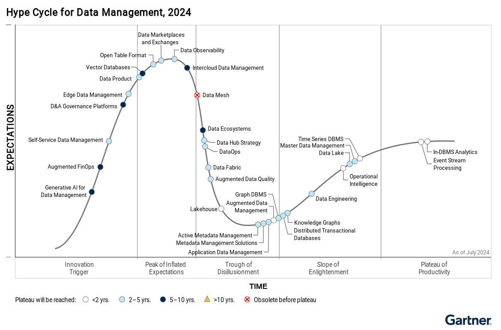

Big Data and Cloud Platforms (Module 2)
Data pipelines on cloud (Storage)

Storage
Storage models

Taxonomy of storage models (Mansouri, Toosi, and Buyya 2017)
Storage models (AWS)
| Data structure | Data abstraction | Data access |
|---|---|---|
| Structured | Database | Relational |
Relational database
- Store data with predefined schemas and relationships between them
- Support ACID transactions
- Maintain referential integrity

Storage models (AWS)
| Data structure | Data abstraction | Data access |
|---|---|---|
| Semi/unstructured | Database | * |
- Key/value: store and retrieve large volumes of data
- Document: store semi-structured data as JSON-like documents
- Wide column: use tables but unlike a relational database, columns can vary from row to row in the same table
- Graph: navigate and query relationships between highly connected datasets
- … and more

Storage models (Google Cloud)


Storage: access frequency (AWS)
AWS S3: storage classes
- Standard: general purpose
- Infrequent (rapid) access
- One Zone-IA: lower-cost option for infrequently accessed data that do not require high availability and resilience
- Glacier: low-cost storage class for data archiving, three retrieval options that range from a few minutes to hours
- Deep Glacier: long-term retention for data accessed once/twice a year.
- E.g., retain data sets for 10 years or longer
- Intelligent-Tiering: move objects between access tiers when access patterns change

Storage: access frequency (AWS)
- Rules that define actions that Amazon S3 applies to a group of objects
Two types of actions:
- Transition: when objects transition to another storage class.
- E.g., archive objects to the S3 Glacier storage 1 year after creating them
- Expiration: when objects expire.
- Amazon S3 deletes expired objects on your behalf

Storage: access frequency (Google Cloud)


Organizing the data lake
Having consistent principles on how to organize your data is important
- To build standardized pipelines with the same design with regard to where read/write data
- Standardization makes it easier to manage your pipelines at scale
- Helps data users search for data in the storage and understand exactly what they need
- Decoupling storage from processing

Organizing the data lake
Production area (PA)
- Apply the business logic to data from SA
Pass-through job
- Copy data from SA to PA and then into DWH without applying any business logic
- Having a data set in the data warehouse and PA that is a replica can be helpful when debugging any issues with the business logic
Cloud data warehouse (DWH)
Failed area (FA)
- You need to be able to deal with all kinds of errors and failures
- There might be bugs in the pipeline code, and cloud resources may fail

Organizing the data lake
Alternative organizations are available
“A data lake is a central repository system for storage, processing, and analysis of raw data, in which the data is kept in its original format and is processed to be queried only when needed. It can store a varied amount of formats in big data ecosystems, from unstructured, semi-structured, to structured data sources.”

Data Independence
Data independence: modify the schema at one level of the database system without altering the schema at the next higher level
- It can be explained using the three-schema architecture

Data Lakehouse


The market is pushing for the adoption of Lakehouse as a standard de facto
Data Lakehouse
Idea
- Store data in a low-cost object store using an open file format such as Apache Parquet
- Implement a transactional metadata layer on top of the object store that defines which objects are part of a table version
- Implement management features within the metadata layer

Lakehouse
Delta Lake
Checkpoint 00000000000000000002.checkpoint.parquet

Delta Lake
Check the scalability with respect to the length of the log
i = 0
while i < 20000:
if i % 10 == 0:
spark.sql("select sum(quantity) from lineitem") # Read the whole fact
spark.sql("insert (500K tuples) into lineitem") # Append new tuples
if i % 100 == 0: OPTIMIZE # Optimize
i += 1
Scalability
Delta Lake

Lakehouse
Example of usage